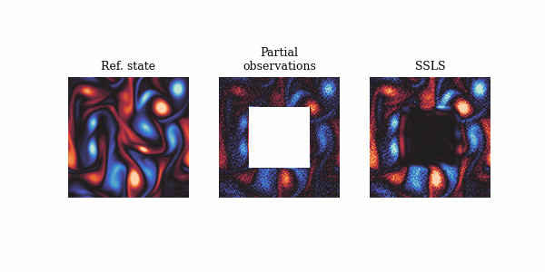
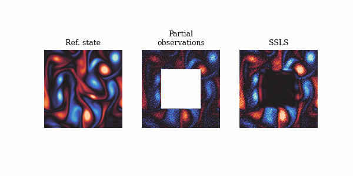

This repo contains the official implementation for the paper “Nonlinear Assimilation with Score-based Sequential Langevin Sampling”, a nonlinear assimilation method called score-based sequential Langevin sampling (SSLS) within a Bayesian recursive framework.
Numerical examples demonstrate its outstanding performance in high-dimensional and nonlinear scenarios, as well as in situations with sparse or partial measurements.

 

pip install -r requirements.txt├── README.md
|-- configs
| |-- kolmogorov.json # configurations for KFlow
| |-- lorenz96.json # configurations for Lorenz 96
| `-- mplrc # custom matplotlib configurations for visualization
|-- main.py # entrance
├── notebooks
│ ├── KolmogorovAblation.ipynb # reproducing Figure 11
│ ├── KolmogorovEvolution.ipynb # reproducing Figure 8
│ ├── KolmogorovMLE.ipynb # ensemble MLE and w/o prior score for ablation studies
│ ├── KolmogorovMetrics.ipynb # reproducing Figure 14
│ ├── KolmogorovUQ.ipynb # reproducing Figure 9 and Figure 10
│ ├── KolmogorovAnimation.ipynb # animation version for Figure 8
│ ├── LinearGaussianSSM.ipynb # reproducing Figure 3
│ ├── LorenzAuxiliaryParticleFilter.ipynb # APF with infation for Lorenz 96
│ ├── LorenzEnsemble.ipynb # reproducing Figure 12
│ ├── LorenzEvolution.ipynb # reproducing Figure 6
│ ├── LorenzKalmanFilter.ipynb # EnKF for Lorenz 96
│ ├── LorenzMetrics.ipynb # reproducing Figure 7
│ └── LorenzTrajectory.ipynb # reproducing Figure 13
|-- requirements.txt
`-- src
| |-- __init__.py
| |-- dynamics
| | |-- __init__.py
| | |-- base.py # abstract dynamics class
| | |-- kolmogorov.py # Kolmogorov flow dynamics
| | `-- lorenz96.py # Lorenz 96 dynamics
| |-- measurements
| | |-- __init__.py
| | |-- avg_pool.py # average pooling for KFlow
| | |-- base.py # abstract measurement class
| | |-- center_mask.py # center mask for KFlow
| | |-- grid_mask.py # grid mask for KFlow
| | |-- linear.py # linear observation for Lorenz 96
| | `-- random_mask.py # random mask for KFlow
| |-- networks
| | |-- __init__.py
| | |-- mlp.py # multilayer perceptron
| | |-- unet1d.py # 1D UNet for Lorenz 96
| | `-- unet2d.py # 2D UNet for KFlow
| |-- train
| | `-- train.py # training loop
| `-- utils.py # auxiliariespython main.py lorenz96|kolmogorov --device cpu|cudaasset folderIf you wish to try your own dynamics and new observation models,
please refer to the src/dynamics/base.py and
src/measurements/base.py, inherit from the
Dynamics and Measurement abstract class.
For Dynamics, you should provide prior and
transition method for initial prior guess and transition of
the dynamics, and for Measurement, you should provide
_measure and measure method for computing
score of likelihood and measurements itself.
This repository is built upon some previous repositories
Kolmogorov Flow from SDA https://github.com/francois-rozet/sda
UNet2D from DDIM https://github.com/ermongroup/ddim
If you find the code useful for your research, please consider citing
@misc{ding2024nonlinearassimilationscorebasedsequential,
title={Nonlinear Assimilation with Score-based Sequential Langevin Sampling},
author={Zhao Ding and Chenguang Duan and Yuling Jiao and Jerry Zhijian Yang and Cheng Yuan and Pingwen Zhang},
year={2024},
eprint={2411.13443},
archivePrefix={arXiv},
primaryClass={math.NA},
url={https://arxiv.org/abs/2411.13443},
}